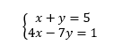

But there is also another way...
INSERTION METHOD
This solution method is the most common. It's convenient when we have a variable with index '1' in one of the equations.
Take for example:
In this case, both variables X and Y have an index of '1' in front of them. Which means, we can convert the first equation so that X is on one side and 5 - Y on the other
Then, we can replace X in the second equation by 5 - Y (insert) and get a linear equation!
Again, let's practice all these concepts a bit more!